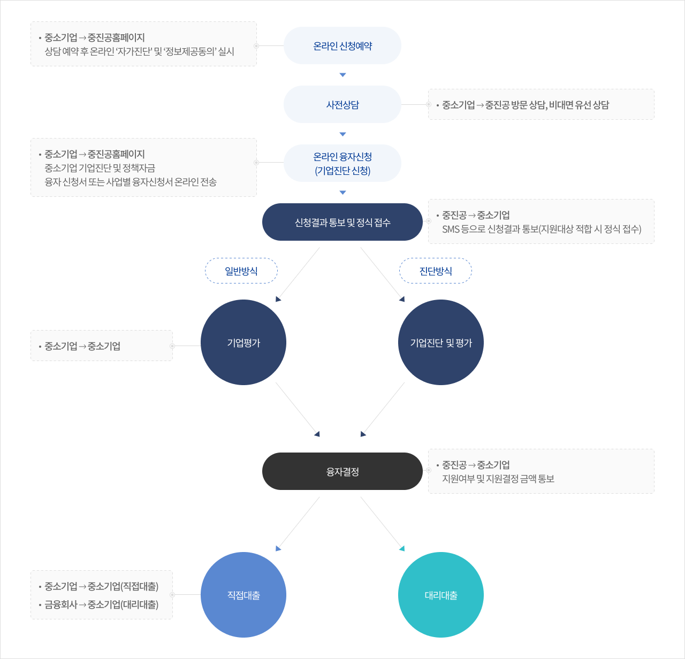

사업개요


정책자금융자체계도

융자절차
1융자 신청 · 접수
1. 융자 신청·접수 절차
-
융자 신청은 ‘온라인 신청예약 → 사전상담 → 온라인신청’ 순으로 진행되며 당월 자금 희망기업은 전월말까지 신청 필요
* 단, 지역본(지)부 접수상황에 따라 온라인신청 접수월 조정 가능
* 특별재난지역 소재 재해중소기업은 온라인 신청예약 단계 생략가능- (온라인신청 예약) 홈페이지(www.kosmes.or.kr)를 통해 상담 예약 후 신청대상 여부 및 신청자금 적정성 등 온라인 ‘자가진단’ 실시
* 허위 ‘자가진단’ 결과 제출기업은 발견일로부터 1년간 정책자금 신청 제한
- (온라인신청) 사전상담 완료 후 신청기회를 부여받은 기업은 정한 기한까지 중진공 홈페이지를 통해 융자신청서 제출
* 월 사전상담 기업이 지역본(지)부별 실태조사 가용인력 범위를 초과하는 경우, 운전자금 신청기업에 대해 정책우선도(혁신성장, 고용창출, 성과공유, 수출, 지역성과 창출 등) 평가를 실시하여 신청기회 부여 여부 결정 가능
-
중진공 지역본(지)부장은 융자 신청기업 중 진단 필요성 및 유형을 고려하여 기업진단 여부를 결정
*기업진단 : 기업을 진단하여 문제점(기업애로)을 도출한 후 처방전(해법)을 제시하고 치유를 위한 자금 등을 연계 지원하는 프로그램
- 접수시기 예외 : 연간 계획된 예산소진 시 신청 불가
2. 제출서류
- ① 사전상담 → ② 융자신청 → ③ 실태조사 단계별로 서류 제출
① 사전상담 시 제출서류
기업 필수 제출서류
- 대표자 신분증 사본 (앞면만) - 팩스, 이메일, 우편 또는 방문
- 자가진단표, 기업・개인 (신용)정보 제공 및 고객정보 활용 동의서 - 중진공 홈페이지 ‘정책자금 신청예약’ 자가진단 단계에서 입력
기업 선택 제출서류(해당시)
- 최근 3개년 표준재무제표
-
(시설자금) 견적서, 계약서, 도면 등
- 토지 : 매매계약서, 건축허가서, 산업단지입주계약서, 건축착공확약서
- 사업장건축 : 건축허가서, 공사계약서, 공사비내역서, 설계도면
- 사업장매입 : 매매계약서
- 기계 : 견적서 또는 계약서, 카다로그 또는 도면
- 경·공매 : 낙찰 및 대금지급 관련 서류
문의처
- 1357(중소기업통합콜센터)
- 1811-3655(정책자금 안내콜센터)